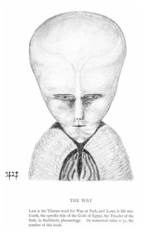
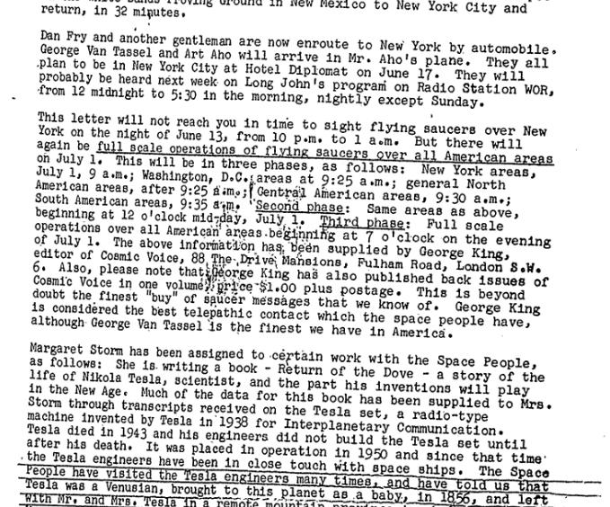
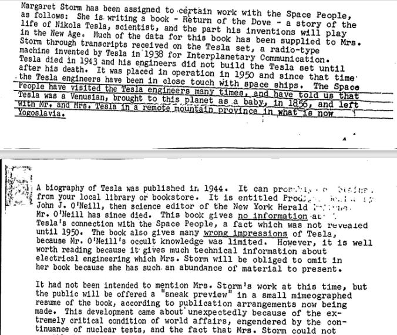
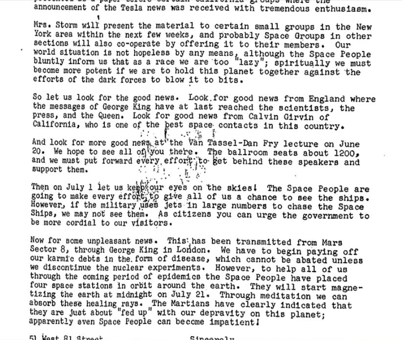

The following is the 18th part from a series of articles describing the adventure that a follower who goes by the handle "daegonmagus" has experienced since reading MM. They are very interesting and fascinating. I hope that you all learn from his journey and maybe learn a thing or two as he relates his unique experiences to the readership here. This particular read is truly enjoyable. I hope you all enjoy it as much as I have. -MM
Part 18 – A Look At Non-Physical Contact Through Participants External to Metallicman
This article is a continuation on themes first presented in my last article, [daegonmagus] – Part 17 – SD’s Experience With More Consciousness Facilities Courtesy of A Shamanistic Recipe For Lucid Dreaming (metallicman.com).
In that article I gave a description of SD’s LD experience of a {yet another} consciousness facility, the beliefs of the Wandjina Wunggurr people of North Western Australia, and the idea that at some point in the long distant past the astral and physical planes were merged into one big reality soup.
I suggest reading it first if you haven’t already.
Now, getting to this article; there are some pretty interesting stories out there if you know where to look. More specifically, though, the occult community has some real gems if you are persistent enough and have a knack to filter through all the bullshit that has a tendency to come up.
For the past 10 years, I have been combing these groups searching for anything that could be remotely related to anything the Elder Guardians and the Unseen 5 told me.
More specifically the astral projection, lucid dreaming, demonology, remote viewing and just general spiritual communities were areas I started conducting my research.
When I get a hit, what I like to do is lay out the person’s experience – completely free of judgement – and tease out all the similar themes and, if there are enough of them, add the person and talk to them to get a more in depth understanding of their experience/s.
So when I come across something like the below message, you can betcha bottom dollar it draws my interest, and thus goes in my research basket.
This was something I stumbled upon the other day on a group for astral projection by a guy named Ophiuchus13:
“Hi. I just want to share with you all my Deep Meditation Experience. -January 6, 2022. There is a trap after life. I encountered a white lizard beings. I saw an many small spaceship & was about to going inside the big mothership. I see some soul light beings are fall in line & they going inside the mother ship too. When i scan the inside the lizard alien mothership i saw the soul light beings are imprisoned inside the electric prison cage. Their divine self (consciousness) is inside the big looking glass jar. That is why they being manipulated to go inside the alien ship. I fight with the white lizard alien & crash all spaceship using the thunderbolts & lava. -January 2, 2022. I saw a white spirit, he's/her body was tied while the flame is burning to him/her. she's/he's indeed eternal or immortal and yet he/she was suffering so i save him/her. After a few moments i saw a vision of a dark crystal ball and it was holding by the white ruler in his hand. his head face is a lion. i scan the crystal ball thru my inner eye. the dark crystal ball is the physical universe. where in so many spark of light was inside the black crystal ball. i tried to destroy the ball but it was really hard but i made it to make it crack so while spark of lighmt will gradually get away. i saw the companion of the lion head rulers most of them are white tnt obo. they tell me that im ranking #4 for being interloper. their realms are light but i dont feel any divine feelings to them and their realms. -October 30, 2021. (3 AM+) I entered the White Crystal Portal, which was super long and brilliant. At the end of it. I am outside the universe as in total darkness but there are stars that are very numerous. I also see a lot of White Box/White Container. I approached it, I saw so many souls in a White Box, they were standing and lined up. I felt when I saw that they were in a deep state of hallucination. The feeling that they thought they were in Heaven but they did not know that they were in a White Box that was crowded. I decided to broke the box, by releasing some power on my weapon. After i broke the white box with full of souls or light beings, the souls have been set freed in the white box and they are going in different directions like star dust in the universe. Later on, an Angel of Light with 9 Wings appeared to me, but I didn't feel any holiness in him. He said "why am I interfering", I said via telepathically that his/her doing wrong. Because he gave hallucinations to light beings or souls and confined them in a white box. He replied to me "Don't let me interfere". Later I released massive thunder bolts or lightning in many white boxes. I can see that the boxes were broken and the souls were freed, estimated they were in 57K that i helped the souls that have disappeared in box & going different directions floated and flew.in Then a white Angel with 9 wings got mad at me. They tied my hands with a white chain but I broke the white chain. They were angry because I'm interfering there works. Until they did nothing to me, they also failed to stop me from freeing the souls trapped in the light portal box.”
Yeah I know, I know; MM is not particular fond of the Reptilian schpeel, but I have a rule when it comes to comparing these sorts of stories with others, and that is to ignore any labels or information identifying race, motivations and anything that could be the result of deliberately implanted distortion into the mind of the experiencer (given the manipulation tactics I have encountered through my experiences, I simply do not trust these images – I cannot rule out that these non physical beings project false images to mask their identities).
What I take note of is the core aspects of the experience, and what I am interested in here is the guy effectively conducted a remote viewing session through meditation and saw parts of the amnesia traps we encounter after death.
So I got to talking with him in a private chat, and he revealed some more information: These beings are cloning his astral bodies using the akashic records as a template to alter the code for the purpose of having him not interfere in their plans.
Hold up, I seem to remember someone else saying something similar about {zombie} clones and using the akashic records to change astral body make up – oh yeah, that someone was me back in my part 2 – [daegonmagus] – Part 2 – Contact with the Elder Guardians (metallicman.com).
Remember how I said the amnesia operated as a sort of code that manipulated a person’s higher energetic bodies so that they would blindly enter into the reincarnation/soul burning chamber after death (which I fucking remember as being what took place right before being thrown into this useless meatsuit)? Well this conversation certainly turned interesting. But I guess it’s just a coincidence and it was something our minds just conjured up after watching a few too many matrix movies right? {Insert laughing face skeptics like to use as a measure of the supposed intelligence they possess to talk about such subjects, rather than actually contribute any meaningful dialogue XD XD XD XD}.
But let’s not end it there.
This is just one of many other stories I have come across that when taken individually comes across as nothing more than the ravings of a mad man, but when combined with the experiences of others start to point at a higher truth slowly being revealed to us.
The Watchers Covid Message
Take for instance this little nugget that was given to an occultist, Severin Aequus, (now a contact that I engage in respectful banter with about occult subjects) just as the whole COVID thing was gaining traction back at the beginning of 2020 (and yeah I have known about it this whole time but refrained from mentioning it, because I like to get an idea of people’s viewpoints on subjects before something can bias it towards one end or another):
“The Watchers' COVID-19 Message: Note: This essay is rather long because there is a need for it to be exhaustive and thorough with regard to the conditions and interpretation of the message. But in order to appease those of you without a lot of time to devote to this, I've included the word "Note:" before any paragraph which is not essential to understanding the message itself. I've spent much of my time over the last few weeks puzzling over what caused the dramatic shift in consciousness that most people appear to have experienced within the last couple of months. A few people, myself included, were unaffected by whatever this influence was. So from our perspective it appears that the world has gone insane. That's not to say that anyone is wrong in terms of their views and/or opinions on how the world should respond to pandemics. It's just that they are inconsistent with the way that we, as a society, have dealt with similar epidemics in the past. If you feel like an outsider watching the world conduct the largest cosplay event ever conceived, then you know which group you're in. On the other hand, if you feel that the world is acting perfectly rationally and consistently, then you are among the majority in the former group. The only thing that seems to differentiate why a person went one way or the other seems to be related to how well-developed their sense of empathy is. Essentially, the capacity for empathy appears to be awakening within everyone. Thus, those who seem unaffected are actually the ones who already had a functioning sense of empathy. Affected? Affected by what? I received a message on May 5, 2020 from a set of intelligences I call "The Watchers". They are also known by some as "The Secret Chiefs", "The Masters" and many other names according to spiritual and/or cultural tradition. I have been in contact with them intermittently for the last 20 years. Over that time, I have received 3 communications from them, including this one. As a matter of convention, all text which comes directly from the message will appear in ALL CAPS. The rest can be assumed to be just my personal commentary, opinion, or conjecture. Note: For those who do not know me, it may be worth pointing out that I am not the type to seek out these sorts of experiences. Quite the contrary. I'm a scientist who has a knack for making "paranormal" things suddenly stop happening just by being in the room. While I have had some success with developing certain types of telepathic and spiritual mediumship abilities, I simply find it to be more practical for daily life to leave those things turned off. So in order for any kind of spiritual intelligence to get my attention, it must be loud and bold. In this particular case, one of the Watchers appeared to my girlfriend while in normal waking consciousness to express his frustration that I could not hear him/them. Hopefully, that provides some helpful background material about the character and practices of your messenger. Note: I cannot provide an exact transcript of the message because they do not speak in language. They are inherently telepathic and can turn on the latent telepathic abilities in humans in order to "hear" them. The first time they "spoke" to me we had to go through a calibration process because they were trying to send information much more quickly than I was able to receive it, much less actually process or understand it. Even at the slowed rate, it's still much too fast to make any use of on the spot. So they leave me with it and I spend the next week sorting through it all and actually comprehending what is in there. For this reason, I often refer to it as an information download. Regarding intent and provenance, I can attest that these beings are not malicious at all. However, I wouldn't exactly call them benevolent either. Their perspective is too far removed from our own for us to be able to fairly assess their integrity or motivations. But who else could have brought about such radical and sudden shift in consciousness? No one in human history has even come close to effecting such radical change on a global scale before and there's no reason to assume that one person or a small cabal are capable of it now. THEY ARE CONDUCTING A MAGICAL OPERATION ON A GLOBAL SCALE TO AFFECT A CHANGE IN THE CONSCIOUSNESS OF HUMANITY. To set the proper context, I have received no knowledge of anything regarding the COVID-19 virus, it's origins, or anything else of a medical nature. That's not what any of this is about. I will say that I feel it's most likely that The Watchers took advantage of a convenient opportunity to piggy-back their operation onto a suitably scary event as opposed to them actually manifesting the virus. But I can't say for sure and the answer is probably irrelevant anyway. The point is that the virus is a means to an end. THIS EMOTIONAL EVENT IS NECESSARY IN ORDER TO TRIGGER THE INTENDED SHIFT IN CONSCIOUSNESS. A shift in consciousness is evidenced by the outpouring of compassion that people are demonstrating for those most susceptible to dying as a result of being infected with COVID-19. When over 80,000 people died from the 2018 flu, it was barely a footnote in most news broadcasts. So, on one hand, our behavior is radically inconsistent. But on the other, we're demonstrating compassion and empathy on a level never before seen. It may even be that some of us have begun to conceive of humanity as one… a monad. While the worst-case scenario for the virus, in terms of lethality, seems to have been avoided, humanity's reaction to it is unprecedented. In the short term - speaking from an American perspective - we are likely to see several social changes in the form of new government programs. Universal (aka. Single Payer) Healthcare and Basic Minimum Income seem like obvious pieces of legislation to pass in the very near future. The fact that I can write such a sentence is shocking considering that it was unfathomable to most Americans before this crisis. That further goes to show that this is having precisely the kind of impact that The Watchers intended for us. While the implementation of various social welfare programs is a great thing, that is just incidental progress along the way to something much bigger. THE ACTUAL STATED GOAL OF THE OPERATION IS TO MERGE THE PHYSICAL AND ASTRAL PLANES OF EXISTENCE. In other words, the 'creatures' and other characters that can presently only be seen through normal waking eyes by the most gifted and practiced seers or mediums will eventually become plainly visible to everyone. As I have begun to slowly promulgate this message, I have received messages from dozens of people from all over the world reporting that their ability to perceive "the other side" has become dramatically stronger in recent months. In an attempt to confirm the validity of the message I received, I contacted a couple of friends of mine who are particularly gifted seers to inquire about anything special going on that day or if they had received any messages. What they revealed confirmed my suspicions that what I received was a genuine communication intended for broadcast. However, to be certain I waited a week before writing the first draft of this post in order to observe whether the message remained as crisp in my memory as it did the day of, as would be expected of a genuine communication. It has. Note: I don't have their permission to reveal their names… or necessarily their support to reveal this message at all. So I'll have to make annoyingly frequent use of pronouns to keep this accounting of events anonymous. Before I get into the details of their experiences, it's worth noting that the appearance of such messages differs from one person to the next because we each perceive reality through the lenses of our knowledge and experience. So it stands to reason that no two people will perceive the same thing in exactly the same way. This holds true for physical objects as well (e.g. "Isn't this painting beautiful?"). Their version of the message came across within the context of their own symbols and cosmology, which happens to be Wiccan. They described it as a "tearing down of the veil between this world and the next". One of them said that they used to have a little old black and white TV with poor reception in their head that they could watch and sometimes glean information from. Starting about a month ago, their TV is now in 4K Theater Surround Mode! They've been having trouble getting overwhelmed with all of the information they're now receiving. They both mentioned that "soon everyone will have the second sight". Note: I don't know what "soon" exactly means, however. I find it highly unlikely that any such shift in awareness in anything we might consider a "soon" time span would cause anything short of massive panic and destructive behavior. The only way that a change that dramatic can be accomplished without sending the word spiraling into madness must be very slow and methodical. So from The Watchers' perspective, this shift may be coming "soon". But on our time scale, think in terms of 2-3 generations (40-60 years) at least. If you've been wondering WHEN THIS VIRUS STUFF WILL PASS AND THINGS RETURN TO "NORMAL", THE ANSWER IS NEVER. Sure, the virus will pass. But IT WAS JUST A CATALYST FOR A FUNDAMENTAL SHIFT IN HUMAN AWARENESS. Even without some bigger goal in mind, just the psychological effect of us having to justify our behavior will result in long-term consequences for the rest of our natural lives. Fortunately for you, this message provides all you need to justify your sudden change in attitude and behavior, so that's one less thing to wrestle with later in life. This leaves us with one big lingering question: Why? To put it quite simply, they expressed that THEY ARE TIRED OF WATCHING US GO THROUGH EXTINCTION EVENTS. THERE'S SIMPLY NOTHING LEFT FOR THE WATCHERS TO LEARN FROM THOSE EVENTS. Hold up… The clear implication of that statement is that without intervention, we were headed toward an imminent self-imposed mass extinction event and this shift in the collective consciousness was necessary to avoid that fate. They didn't specify the nature of this event. But we could certainly devise a short list of likely candidates. But does it matter if it's been averted? Maybe. They weren't completely clear as to whether the event was conclusively diverted or if it was merely postponed or if they just suspect that this change will be enough to avert the crisis when it comes. Of course, this also begs the question of what these previous extinction events were. It's conceivable that this Earth has seen multiple humanoid experiments in its 4.5 billion-year history, especially since we've only been here for 100,00 or so. The only thing we can say about that is that they must not have reached our level of technological "advancement" because we aren't going around picking up pieces of ancient styrofoam everywhere. ( For more information, see this article from Popular Mechanics: https://www.popularmechanics.com/science/animals/a32743456/rapid-mass-extinction/). Another possibility is that they are referring to micro-extinctions on the level of civilizations, such as the Mayans. Other more "out there" possibilities include the idea that there could be many humanoid experiments being conducted right now on different planets. Or they could be referring to an abstract idea of timelines intersecting across n-dimensional space-time. But they didn't specify, so you're free to take your pick or add your own idea. This brings us to a close. Please note that the message is what it is. I can provide very little other than what has been included here. Thus, each person must decide for themselves whether it is something they are willing and able to accept or not. Also, if you have received any related messages or have anything to add to this narrative, please share your experience in the comments”
Wow! I have to admit, I am impressed with Severin’s writing, and even more so with his ability to keep an objective perspective when dealing with his own {seemingly crazy, going by society’s standards} experiences.
Like me, Severin has his own experiments going when it comes to astral projection (he’s even got a you tube channel up at that talks about that subject a bit more in depth if anyone is interested: Scientific Illuminism Institute – YouTube) Seems to be a rarity in this day and age when dealing with messages communicated in the non physical domain.
Again, when we start peeling back some of the core aspects of Severin’s experience, we find some similarities with the “secret chiefs” and my Elder Guardians, the idea that both groups don’t want to see us go extinct on account of being a bunch of dumb apes (for the umpteenth time, according to Severin’s Watcher), and that there is room for improvement when it comes to our cognitive processing abilities.
Then there is the idea that these Watchers are slowly expanding people’s consciousness to effectively be able to see what astral projectors see when they are off galavanting around the astral planes…. Which reminds me (taken from my part 3):
“{The Unseen 5 Leader} mentioned that the organization’s numbers used to be quite significantly higher; the recent (past 1000 years) decline in its numbers meant that the 5 of them were under a substantial logistics workload, even when operating from this higher state of consciousness. {The Unseen 5 Leader} was the only full time operator, after all. Thus an additional task of mine included making their presence known to those with astral projection/ lucid dreaming abilities.
{The Unseen 5 Leader} was concerned people with these skills didn’t take them as seriously as I did. He made a point of telling me the astral planes weren’t there just for people to go buzzing around on a holiday away from physical reality. They were the frontlines of a very real non physical war where the weapon of choice was being targeted directly at human consciousness.”
Severin told me that since posting this on the on that particular astral projection group that he has had it confirmed by more than a dozen other people who have had similar contact experiences, and suggests “there’s definitely some meat on those bones”. He also suggested there is a definite ET element to this, but suggests “people don’t realise they are travelling astrally, not physically”.
So the “Watchers” (take note of this terminology; I have found it a common terminology used by other abductees who understand the ET/ Astral relationship, along with “the Others”) are planning on merging the non physical and physical planes eh?
And yeah, I could see how if you’d never astral projected before that this might come across as total bullshit and insanity. But if more than one person are saying the same thing, then it’s a good bet that argument goes out the window. In case you missed my last article, my wife, SD, was also given similar information.
That article also points to some more consistency in this narrative from the perspective of two ancient cultures. Here’s a piece I didn’t add that gives a bit of back story to her experiences.
“Again I was walking the dog behind the oval at the mud pits, and there was a man just standing at the top of this small ridgeline with a German shepherd. The most off putting thing was that wherever they looked, it was at the same time like both of them were synchronized robots or something; when the man would turn his head the dog would turn it as well like they were one entity. Charlie was going about his business and then when we got to that bit where they were – you had to go up and over this little cliff and down into a gully – he just stopped, his heckles went up and he walked backwards out of the gulley when he saw them. I turned around and followed Charlie (the dog) because it was just strange and creepy. That was the first time I physically saw that guy, and that is when the weird dreams started; they were of that person or dude, or whatever he was telling me weird things about different times and places; that was how I formerly met him. He had a scar down one side of his face that he apparently got in some war. I ended up calling him Vince after a TV show with a similar looking guy. The things he would talk about seemed like they were in reference to astral worlds. Vince would tell me things to do with a flood and the Fae race. He reminded me that my soul was not a typical person soul – this had been revealed to me by the creatures around my bed. He explained there are four different types of human so to speak. Ones that have souls from the beings from before (when the astral and physical planes were one thing); some are the typical ape descendant, one is a hybrid race that comes from what I assumed at the time he meant as being dinosaurs, and the other one is similar to what I now know to be the Nordic type. He said they were the four types of human that live on the planet currently, and there will come a time in my life where people will find out about it, and that it is important to remember which one I am, because there will be a lot of bullshit and people will try to tell me that I am something that I am not, and to remember that having a Witch’s power is very significant. It was because of him I found out about the astral war; he told me all about it. What he told me was that the astral war has been going on for quite some time; pretty much there is the equivalent of what biblical orientated people would assume are angels and demons but they aren’t. They are the same race split in two, one half is fighting for the merge of the astral and physical worlds to come back, one is fighting against it to keep it separated. My people/ race were originally very powerful because of their magical abilities but then another race came into it and decided that because of their science they were superior. The human races are new because the science race is one of the ones who do all the manipulative things to everyone through technology. They have also used their tech to create certain types of people. The problem is those types of beings don’t have the ability to create soul energy from nothing, whereas the people who were my people were able to create soul energy.
The gist I got, was that there are some beings who have souls and who can have children who have souls and then there are some who cannot: the ones who don’t have souls, want one because when their life ends they are gone. So they are trying to pretty much steal and take the magic part of the DNA that creates souls; there is apparently a section of DNA – a tiny piece – that dictates whether or not someone has a soul complex or not.
So that is what the war is literally over, the ones who don’t have the souls enslaved the people who do, and forced them into camps raped them , did experiments on them and tortured them for thousands of years. The factions in the astral that are now trying to fix the problem are trying to wake up the whole physical realm to this other thing that is going on, because at the moment they are the only realm that knows that there is more than just themselves; they are trying to wake up people in the physical plane to the fact that there is another 12 planes of existence (13 altogether). Half of the issue is that these four races on earth are all from different factions and the DNA from some of them has the ability to open the veils and join the astral with the physical – they are the keys. The problem is that the ones that have been pretty much making dummy people to try and figure out how to make a soul have very conveniently built into their people this weird obsession with energy so they can be manipulated by it; so they can and will hinder, hurt and kill those who are the keys trying to access that. Apparently the keys are given a guard so when they unlock the key part of themselves they are therefore guarded continuously from then on, because they become more vulnerable physically when they are spiritually awoken. Vince allegedly was my first guard before the physical one came (DM).
Rather than rehash the whole transcription that I did include in that article, lets just take some key paragraphs:
“Firstly the Fae (faery) beings were on earth. At the same time there were various types of humans (Neanderthal included) and at that time, the physical and astral realms were tethered to each other and you could walk through each easily like walking over a bridge or through a door; there was no need to fall asleep to detach the consciousness from the physical body because on earth they could manipulate the matter body to become light body and astral body at will. We will never get out if the merge doesn't happen. The amnesia will never go away if it doesn't happen. We will be stuck in an infinite reincarnation loop if it doesn’t happen. But the ones who separated the matter from the astral and their allies are doing everything to try and not let that happen. Some human officials know about this and are trying to stop the re-opening. Abrahamic religion is the enemy of all who want to be free of this trap.”
Do I really need to spell out the very obvious connections for you? This is quickly turning into some sort of weird love triangle between seemingly random folk (consider SD and me as one person) except replace word “love” with “occult information downloads”.
These three people alone seem to have a better idea of what’s going when it comes to the ET agenda than do the entire fucking community that has been established to “investigate” UFOs over the past 3 quarters of a century.
Yet they won’t be taken seriously because of a wall of ignorance when it comes to what occultism actually is.
But yeah I know ….laughing smiley faces and all that from the skeptic community.
Oh yeah speaking of skeptics, SD and I have a friend who, until very recently was a skeptic to anything ET or UFO related. Thinking it was all a load of complete bullshit her whole life kind of skeptic.
That was, of course until she started committing herself to daily meditation practices and then started seeing random light beings hanging around her yard – literally standing in the back yard just casually going about their business.
Now she believes she is in communication with her real mother and her dead friend, seemingly overnight, a real double whammy. Sounds like she got a dose of that astral sight Severin Mentioned.
There are various other stories with striking similarities I have come across over the years that I either don’t have permission to reproduce here or was too short sighted to bother copying down.
Point is, they are there if your initiative extends beyond lifting a finger and clicking on a laughing face emoticon. What we can distill from these stories is that higher order information in regards to earth’s history is being given to these people who have a background in either astral projection, lucid dreaming, or transcendental meditation, in pretty much the exact same way myself and SD having being accessing similar information, or by similar non physical entities. The occult theme is a very strong connector of these stories.
We know from the Domain commander and my Grand Elder Guardian that lucid dreamers are considered extremely valuable assets because they can act as conduits for these non physicals to contact the physical world, as well as detach consciousness and move about through the greater universe:
“A person with the ability to conduct “lucid dreaming” has a special and unique skill set that enables them to be a mission critical asset. However, this kind of asset should not be meaninglessly squandered, but rather should be briefed on a specific target and then act in coordination with other unified forces to achieve a very specific outcome” Answers from The Domain from questions generated 18SEP21 (metallicman.com)
“Apparently, according to these Elders, anyone who demonstrated these abilities were held in high regard by them, as it allowed them the opportunity to communicate with those back on the physical plane without it being compromised by external forces.” [daegonmagus] - Part 1 - Exploration of the Non-Physical Reality (metallicman.com)
Tool
And then there’s these lyrics from the band Tool, who just so happen to be a bunch of Occultists (the drummer’s dad was a Freemason) and Lucid dreamers (https://www.youtube.com/watch?v=1zRLakTHcX0) who me and SD have both met in numerous LDs (The singer Maynard, was actually getting annoyed at her for “not yet becoming lucid enough to talk to him in one of them”).
They are mentioned in a past brief article on MM. And let me just state I have also used LD to create a simulation of a Tool concert one night after going to a, you guessed it, Tool concert; it was fucking incredible I watched the whole thing from about a 25m above the crowd on top of a skyscraper. Anyways this song came out in the middle of 2019, several months before COVID was even a splinter in the minds of us all and is titled “Fear Innoculum”. It is off the album of the same name (not mentioned in that MM article):
Immunity, long Overdue. Contagion, I exhale you Naïve, I opened up to you, venom and mania. Now Contagion, I exhale you. The Deceiver says, “You belong to me. You don’t wanna breathe the light of the others. Fear the light. Fear the breath. Fear the others for eternity.” But I hear them now. Inhale the clarity. I hear the venom in what you say. Inoculated. Bless this immunity. Exhale. Expel. Recast my tale. Weave my allegorical elegy. Enumerate all that I’m to do. Calculating steps away from you. My own mitosis, growing through division from mania. Exhale. Expel. Recast my tale. Weave my allegorical elegy. Forfeit all control, you Poison, you Spectacle. Exorcise the Spectacle. Exorcise the malady. Exorcize the disparate poison for eternity. Purge me and Evacuate the Venom & the Fear that binds me. Your veil now, lift away. I see you running. Deceiver, chased away. A Long time coming.
It almost seems as though Tool {might have} been given some information about COVID prior to it happening through lucid dreaming and downloading some of that higher order information. Then there are their songs on that same album about a “Tempest” coming to fuck with the establishment, how we are spiritual “Pneuma”/ soul based entities bound to flesh that need to “wake up”, being too old to fight and laying down arms, stirring us from our slumber to call us to “arms and order”, culling the voices in our head that whisper us into psychopathy and having psychopathic tendencies against one another…..read the lyrics and tell me it’s not all one big fucking metaphor for this entire Metallicman site. The Tool Page: Fear Inoculum Lyrics (down.net)
But of course, Maynard (the singer/ lyricist) suggests he was just “very well informed” and not really predicting anything. And yeah I mean I get it. The last thing you want to do when you are a big rock star is go around admitting you believe in interdimensional entities contacting people through lucid dreaming, just in case people start thinking your fucking nuts and your fan base starts diminishing. Like the guy I talked to on a Tool fan group who couldn’t grasp the concept of the lyric “I sold my soul to make a record, dipshit” and the sigil of the Goetic spirit Astaroth that appears on that very disc (remember this it; will become relevant in a future articles).
Doesn’t mean you can’t imply it though.
Here’s the track Faaip de Oiad off their Lateralus Album. faip de oaid tool – Bing video
It is not actually a proper song, but a remix of a call to Coast to Coast radio station back in 1997 from an apparent ex Area 51 employee who began telling Art Bell that ETs were “extra dimensional entities” that had infiltrated various levels of the US government, military and space (NASA) sectors.
This government and this military apparently knew about “coming chaotic events” and could have been moving people to safer locations but were choosing not to in order to allow better control over the survivors.
The call apparently got cut off half way through, and the station went down, if I recall correctly.
The are those who suggest it was real, and those who suggested it was a hoax that touched on some shit the US government {at the time} didn’t want people knowing about, hence the reason for the apparent media blackout that happened half way through it.
Is it just another coincidence that Tool tacked this on to the end of an album about alchemy and spiritual evolution through concepts established by Carl Jung, who was also an apparent lucid dreamer?
Then there is their song Rosetta Stoned off their 10 000 days album which seems to be a piss take of a seemingly normal guy’s interaction with “almond shaped eyed ETs” that told him a bunch of important stuff he forgot to write down; it actually sounds a lot like what my experiences would have become, if you replace the almond eyes with long beards and took my dream journal away from next to my bed. It’s not like Myself and MM deal with our experiences through well placed humour or anything….
And Danny Carey, the drummer launching his Crowley inspired “Lam ET” clothing line. If you don’t know who or what the fuck a Lam is, don’t worry, we will get into it a bit further down. It’s a bit of a “grey” area, wink wink.
Faaip De Oad is apparently an Enochian word – remember that Angelic language I told you about that was transcribed by Edward Kelly as his associate John Dee sat in trance and allegedly communicated with the angel Enoch?
Occult societies such as the Hermetic Order of the Golden Dawn also dedicated much time and meditation to this language – Israel Regardie, Aleister Crowley’s secretary, includes a whole section about the Enochian calls and the “watchtowers” in his book, The Golden Dawn (let’s not get this confused with the Greek Neo Nazi Political party, which came long after) that Crowley and the order were using at the beginning of the 20th century.
And this isn’t just a passing reference; this was part of the actual curriculum Golden Dawn initiates were expected to study once they reached the higher ranks of the order on their quest to become Magisters Templi (Masters of the Temple) which was only achievable upon death. There are {allegedly} entire planes one can access through astral projection by using these calls, in which one experiences a rush of energy and possible contact with other wordly beings.
Crowley allegedly got so good at using them that he was able to access almost all of these planes pretty much at will. I, personally, have never bothered with them. I have been doing similar since I was 8 years old; why over complicate something I already knew?
After the Golden Dawn disbanded, Crowley would then go on to run the Ordo Templi Orientis (Order of the Oriental Temple/ OTO), where again much of these occult philosophies would take root.
While a whole article can be written about Crowley and his antics and the secret societies he was part of (and yeah, it’s coming) the important thing to note here is that Severin is a former member of the OTO.
This strengthens what the leader of the Unseen 5 told me back in November 2016; that those with astral projection and lucid dreaming capabilities are being prepared for 1st contact by these non physical organisations.
It seems to me that the astral based Unseen 5 organisation I was initiated into are the ones in control of this whole operation, and are {possibly} responsible for seeding the curriculums of these Hermetic Societies into the minds of their members back as far as they can be traced (Ancient Egypt and Thoth/ Hermes).
Damn, we are covering a lot of ground here.
Let’s cover some more:
Blavatsky’s Theosophical Society again strengthens this occult/ non physical based contact connection. Unbeknownst to me at the time, it was Blavatsky who actually suggested the idea of the Ascended Masters/ Great White Brotherhood that I was studying around the time I was contacted by the Elder Guardians. Blavatsky literally wrote the book on “secret initiatory knowledge” – The Secret Doctrine – and claimed these traditions were passed along to her by a group of highly enlightened yogi’s, which she called the Mahatmas, that were living in Tibet. This concept of Secret Masters (or chiefs as Severin calls them) was further expanded upon by CW Leadbeater, who continued on the society after Blavatsky’s death. If you have ever read up on Saint Germain or Jesus being an Ascended Master/ part of the GWB then you can take comfort in the fact that Blavatsky, an Occultist whose notoriety rivalled that of Crowley, was touting these ideas the same time Jack the Ripper was running around London killing prostitutes.
Speaking of Blavatsky and Jack of Whitechapel; Who did Aleister Crowley Say was Jack the Ripper? | Mysterium Academy…
That article raises some very good points, though I would have suggested Crowley was the killer based on some similarities I found with his hand writing and the letters left by old Jack, even if he was only a teenager at the time (I am actually writing a fictional book about this if I ever find the time to finish it).
Regardless of whether Crowley was correct in his assumptions or not, Blavatsky had something to say when it came to the 7 root races of earth that she obtained through “astral clairvoyance”. I find it interesting what she said about the 1st and 6th Root Race:
‘The first root race (Polarian)
The first root race was “ethereal”, i.e. they were composed of etheric matter. They reproduced by dividing like an amoeba. Earth was still cooling at that time. The first mountain to arise out of the stormy primeval ocean was Mount Meru.” – Root race – Wikipedia

Kind of like what the Wandjina Wunggurr peoples of North Western Australia said about the Wandjina spirits eh, before painting pictures of them all over the fucking desert, that looked a just little bit like the Greys. Similar to this non physical entity that apparently contacted Crowley, after he conducted a ritual to “create a portal between the stars to let it in”, I suppose. Crowley thought Lam to be the spirit of a dead Tibetan Monk:
It gets interesting when you read Blavatsky’s {somewhat racially bias} entry on the 5th root race:
The fifth root race (Aryan)
Early beginnings of the Aryan root race
Blavatsky asserted humanity is now in the fifth or Aryan root race, which Theosophists believe to have emerged from the previous fourth root race (Atlantean root race) beginning about 100,000 years ago in Atlantis. (According to Powell, when Madame Blavatsky stated the Aryan root race was 1,000,000 years old, she meant that the souls of the people that later physically incarnated as the first Aryans about 100,000 years ago began to incarnate in the bodies of Atlanteans 1,000,000 years ago.[13] However, another way of interpreting this is that Nature began to create the Aryan race before the final cataclysms.) Theosophists believe the Aryan root race was physically progenerated by the Vaivasvatu Manu, one of the Masters of the Ancient Wisdom. The present-day ethnic group most closely related to the new race is the Kabyle. The small band of only 9,000 people constituting the then small Aryan root race migrated out of Atlantis in 79,797 BC. The bards of the new white root-race poetically referred to the new race as being moon-colored.[19] A small group of these Aryan migrants from Atlantis split from the main body of migrants and went south to the shore of an inland sea in what was then a verdant and lush Sahara where they founded the “City of the Sun”. The main body of migrants continued onwards to an island called the “white island” in the middle of what was then an inland sea in what is now the Gobi desert, where they established the “City of the Bridge”.[20] (The “City of the Bridge” was constructed directly below the etheric city called Shamballa where Theosophists believe the governing deity of Earth, Sanat Kumara, dwells; thus, the ongoing evolution of the Aryan root race has been divinely guided by the being Theosophists call “The Lord of the World”.)
The esoteric name of the whole of the present land surface of Earth, i.e. the World Island, the Americas, the Australian continent and Antarctica taken as a whole is Krauncha.[8]
Blavatsky connects physical race with spiritual attributes constantly throughout her works:
The intellectual difference between the Aryan and other civilized nations and such savages as the South Sea Islanders, is inexplicable on any other grounds. No amount of culture, nor generations of training amid civilization, could raise such human specimens as the Bushmen, the Veddhas of Ceylon, and some African tribes, to the same intellectual level as the Aryans, the Semites, and the Turanians so called. The ‘sacred spark’ is missing in them and it is they who are the only inferior races on the globe, now happily – owing to the wise adjustment of nature which ever works in that direction – fast dying out. Verily mankind is ‘of one blood,’ but not of the same essence. We are the hot-house, artificially quickened plants in nature, having in us a spark, which in them is latent.”[21] … Esoteric history teaches that idols and their worship died out with the Fourth Race, until the survivors of the hybrid races of the latter (Chinamen, African Negroes, &c.) gradually brought the worship back. The Vedas countenance no idols; all the modern Hindu writings do.[22]
Generally speaking, a large percentage of the people who live in the time of the period of the fifth root race are part of the fifth root race. However Blavatsky also opines that some Semitic peoples have become “degenerate in spirituality”. She asserted that some peoples descended from the Lemurians are “semi-animal creatures”. These latter include “the Tasmanians, a portion of the Australians.” There are also “considerable numbers of the mixed Lemuro-Atlantean peoples produced by various crossings with such semi-human stocks — e.g., the wild men of Borneo, the Veddhas of Ceylon, most of the remaining Australians, Bushmen, Negritos, Andaman Islanders, etc.”[23] All these aforementioned groups mentioned by Blavatsky, except the Borneians, are part of what in the late 19th and most of the 20th century was called the Australoid race (except for the Bushmen, part of the Capoid race), both of which races, as noted above, were believed by traditional Theosophists to have been descended from the Lemurians
In case you didn’t get it, those underlined parts are very synonymous with what Airl said and which I highlighted in the article about the Wandjina spirits:
“These IS-BEs are mixed together with earlier inhabitants of Earth who came from another star system more than 400,000 years ago to establish the civilizations of Atlanta [ii] (Footnote) and Lemuria [iii] (Footnote). Those civilizations vanished beneath the tidal waves caused by a planetary “polar shift”, [iv] (Footnote) many thousands of years before the current “prison” population started to arrive. Apparently, the IS-BEs from those star systems were the source of the original, oriental races of Earth, beginning in Australia (it’s ok I rarely bother with footnotes either).” – Alien Interview
Bet you didn’t realise the Theosophical society were also indirectly involved in Airl’s interrogation at Roswell, long after Blavatsky turned to bones and dust, huh?
“Over the next several days a psychic research scientist from back East was flown to the base to interview the alien. Her name was Gertrude something or other. I don’t recall the last name. On another occasion an Indian clairvoyant named Krishnamurti came to the base to try to communicate with the alien. Neither one was successful at getting the alien to communicate anything. I was personally not able to communicate telepathically with either of these people either, although I did think that Krishnamurti was a very kind and intelligent gentleman. ” – Alien Interview
Krishnamurti went on to become a Jesus like figure known as Matraya to the Theosophical society, which is even included in Spencer’s foot notes (#33) in Alien Interview. Krishnamurti ended up rejecting the Theosophist claim he was the “world teacher” much to their dissatisfaction, to which Leadbeater basically said the “Messiah came and it was a total fucking failure”:
Jiddu Krishnamurti – Wikipedia
Alien Interview – 02 (bibliotecapleyades.net)
What Spencer didn’t include in that footnote was that there was another Krishnamurti (unrelated) of Indian descent who was also associated with the Theosophical society during the same period and who fits the criteria of a clairvoyant much more than Jiddu.
This particular Krishnamurti even had experience training with yogi’s in Tibet over seven summers.
Seriously, read about his philosophy on thought and tell me it doesn’t sound similar to my meditation of the stillness of the mind found in my 1st lucid dreaming lesson. He seems like a more likely candidate to try and get the ET to talk than someone who was a “dim-witted child with a cool aura”:
“I have no teaching. There is nothing to preserve. Teaching implies something that can be used to bring about change. Sorry, there is no teaching here, just disjointed, disconnected sentences. What is there is only your interpretation, nothing else. For this reason there is not now nor will there ever be any kind of copyright for whatever I am saying. I have no claims.[23] I am forced by the nature of your listening to always negate the first statement with another statement. Then the second statement is negated by a third and so on. My aim is not some comfy dialectical thesis but the total negation of everything that can be expressed.” - U. G. Krishnamurti - Wikipedia
And…
”Once you start catching these thoughts, try experimenting with neutralising them with their polar opposites. When there is a “gnawing feeling” that you should react a certain way, take a breath and just observe it passively. The human mind has a myriad of triggers that professionals have learnt how to push and prod. Unfortunately for you, they don’t stop being pushed just when an advertisement has run its course through your head. This is how you learn how to deactivate them. By doing so you will be teaching yourself to be less prone to manipulation whilst in the void space. You will strengthen your psychological disposition towards dealing with whatever the dream state throws at you. This is a big part of what occult philosophy is about.” -[daegonmagus] - Part 8 - Lucid Dreaming Lesson 1: The Lucid Void Space and The Three Meditations (metallicman.com)
If you think this rabbit hole is getting weird, then allow me to point you in the direction of the Aetherius society, headed by self proclaimed yoga master George King.
The Aetherius society was an offshoot based primarily on the Theosophical societies beliefs, established in the mid 1950s by King.
Whilst the Theosophical society didn’t come right out and say the non physical entities they were involved with were ETs, (until much later, any way) the Aetherius Society did.
In fact, the whole fucking premise behind it was that King came into contact with non physical extra terrestrial intelligences that he called the Cosmic Masters during his marathon yoga sessions.
It is, for all intents and purposes these days considered a UFO religion. I came across them after trying to figure out who the Unseen 5 were. Essentially King and another 4 Adepts were responsible for entering into the astral planes and evicting an alien presence that dwelt there that was fucking with humanity without their knowledge, what they equated to as being “Satan” (I wondered if the Aetherius Society and the Unseen 5 were the one and the same given they had a very similar modus operandi and a very similar headcount).
Now I have to admit, if it wasn’t for my own interactions with the Unseen 5, this story would have seemed somewhat ridiculous.
Where it gets even weirder is that there is a declassified FBI document about Nikola Tesla being originally from Venus, where King is featured. For some reason, the FBI never slapped a big red BOGUS sticker all over it like they did with every page of the Majestic 12 documents.
While the document seems to be the very real investigation into plans for Tesla’s death ray being stolen by his nephew after his death and dropped into the hands of the Soviets, it also briefly mentions George King in several paragraphs, who seems to have predicted with pin point accuracy where and when UFOs were going to land all over America.
This was included as a part of a magazine issue of the “Cosmic Voice”, which seemingly was important to the Tesla investigation because of reports A woman named Margaret Storme (lol), was using a radio type machine invented by Tesla in 1938 for “Interplanetery communication purposes”.
Also because the Magazine suggested King was told by the non physical intelligences he was in contact with that Tesla was from Venus.
I can’t find any subsequent information on any sightings happening on those dates King suggested America would be visited by UFOs, though the bit on Tesla reminds me of what Airl said:
“A few officers of The Domain Expeditionary Force have taken it upon themselves to provide technology to Earth during their off duty time. These officers leave their “doll” at the space station and, as an IS-BE, assume or take over a biological body on Earth. In some cases an officer can remain on duty while they inhabit and control other bodies at the same time.
This is a very dangerous and adventurous undertaking.
It requires a very able IS-BE to accomplish such a mission, and return to base successfully. One officer who did this recently, while continuing to attend to his official duties, was known on Earth as the electronics inventor, Nicola Tesla. “

and…

Here’s another paragraph of King suggesting the aliens had protocols in place to make sure we pay off our debts through diseases and epidemics. Can’t imagine that any of that is applicable in this day and age:

In fact George King seems to pop up quite a bit in this document. I specifically remember two agents mentioning him and the “good fight almost being won”. Whether or not it is bullshit and he was a fraud I’ll leave to the reader to judge.
Blavatsky at least has other people who have validated much of her information. Like Alice Bailey, Benjamin Crème and Rudolph Steiner to mention a few.
Speaking of Steiner this is a quote of something he said almost a hundred years ago. :
“ In the future, we will eliminate the soul with medicine. Under the pretext of a ‘healthy point of view’, there will be a vaccine by which the human body will be treated as soon as possible directly at birth, so that the human being cannot develop the thought of the existence of soul and Spirit. To materialistic doctors, will be entrusted with the task of removing the soul of humanity. As today, people are vaccine against this disease or disease, so in the future, children will be vaccinated with a substance that can be produced precisely in such a way that people, thanks to this vaccination, will be immune to being subjected to the “madness” of spiritual life. He would be extremely smart, but he would not develop a conscience, and that is the true goal of some materialistic circles. With such a vaccine, you can easily make the etheric body loose in the physical body. Once the etheric body is detached, the relationship between the universe and the etheric body would become extremely unstable, and man would become an automaton, for the physical body of man must be polished on this Earth by spiritual will. So, the vaccine becomes a kind of arymanique force; man can no longer get rid of a given materialistic feeling. He becomes materialistic of constitution and can no longer rise to the spiritual “. Rudolf Steiner (1861-1925);” Oh and by the way, in case you were wondering, that George Van Tassel guy in that Cosmic Voice paragraph of the FBI document is where that mysterious Ashtar Command group that has been {supposedly} contacting starseeds and pirating British radio stations originated from:
Ashtar (extraterrestrial being) – Wikipedi
Southern Television broadcast interruption – Wikipedia
The point I am trying to make here is that there is heavy evidence to suggest occultists practicing the arts of astral projection and/ or lucid dreaming have potentially been contacted by non physical entities and given information on an alternate history of our earth for at least the past 140ish years. Actually I can go one better than that.
To summarise:
My assumption is that any ancient culture that incorporated dreaming into its belief structure would have at some point made contact with non physical entities such as I did, assuming they likely developed advanced lucid dreaming practices.
I would suggest that the dreaming cultures are no longer the prime targets for the non physical entities, due to the invasions of white man into their territories and the assimilation of their beliefs into those of the invading parties (this has also happened with Theosophy in recent years –). Occultists with a background in astral projection and lucid dreaming seem like the next obvious choice for contact, due to them being “natural shamans.” And according to the Unseen 5, they are.
It seems logical that if an alternate history is being presented to modern day occultists, then a more complex version of that history was, in all probability, given to these cultures. It also seems logical that any secret societies that had astral projection/ lucid dreaming practices embedded into their curriculum, were likely contact hotspots. The question then becomes what is the agenda of the contacting entities?
The common underlying themes being presented to modern day occultists that is comparable with these ancient cultures is the idea of the astral and non physical worlds being “merged” together, and the idea of the matrix soul prison.
Blavatsky’s knowledge seems to present this history in the form of an agenda to create specific races of people and the expected schedule of evolution, ie one of these non physical race’s hybridisation/ breeding programs. When looked at in this context, SD’s and my experiences of the same programs, and the idea that astral bodies are being modified to either suppress or support this outcome becomes apparent.
There is also evidence to suggest knowledge of viruses being used by these non physicals to deliberately “steer” humanity one way or the other being handed down “for karmic neutralising purposes” in the words of King, or to “better enslave us” in the words of Steiner (my experiences suggest Steiner is more on point with this).
Much of this is corroborated by Airl, the Commander, and the operations of MAJestic.
The Unseen 5 seem to be the ones in control of this whole occultist contact operation, going by what was told to me by their leader, and the responsibilities given to me by “him”. Theosophy hints at who exactly this organisation could be, which I will start digging int in a later article.
From my conversation with the leader of the Unseen 5, my understanding is that there are certain consciousnesses being primed for reincarnation whose astral bodies have been manipulated specifically to allow them greater access to their past life memories that will begin to pop up in great numbers in the general population.
These people will be a collection of Nikola Tesla like consciousnesses that will be able to connect with and bring forth higher information more easily. I would package this in with what Severin termed as “astral sight”.
I predict there will be those, like mine and SD’s friend who will begin seeing into the astral realms on a regular basis, and there will be those that will establish new technologies on account of connecting with their Higher Selves/ beings that exist therein; the Tesla’s of the new world.
Even Crowley seemed to be aware of a similar operation in what he deemed as the New Aeon, or the “Coming of the Age of Aquarius”.
Severin and I have similar also timeframes for the effects of this project to start becoming noticeable within human population – 2 to 3 generations from now.
As I was never initiated into any of these physical based organisations – and achieved contact with my non physical handlers solely through my own private studies – I am not bound by any oaths of secrecy or allegiance to them, hence I can talk about my understanding of them and this agenda freely.
Of course, that doesn’t mean I am correct in my assumptions here either; making the Unseen 5 and their agenda known to “magicians”, and acting in a recruiting capacity for them was what I was ultimately tasked with – it didn’t actually involve anything to do these secret societies, such as the Theosophical Society or the Hermetic Order of The Golden Dawn even though the curriculum of said societies is what I was studying.
This is all research I have conducted after trying to understand who they are – I welcome any feedback from people who have a greater understanding of these subjects.
I am covering a lot of ground here so for now I think this will do.
You can visit the daegonmagus Index here…
MM Articles & Links
You’ll not find any big banners or popups here talking about cookies and privacy notices. There are no ads on this site (aside from the hosting ads – a necessary evil). Functionally and fundamentally, I just don’t make money off of this blog. It is NOT monetized. Finally, I don’t track you because I just don’t care to.
- You can start reading the articles by going HERE.
- You can visit the Index Page HERE to explore by article subject.
- You can also ask the author some questions. You can go HERE to find out how to go about this.
- You can find out more about the author HERE.
- If you have concerns or complaints, you can go HERE.
- If you want to make a donation, you can go HERE.